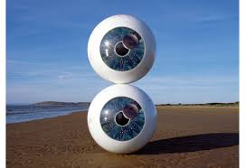
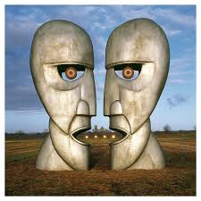
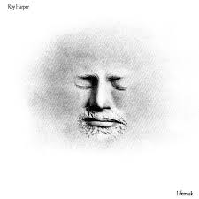

<!DOCTYPE html>
<html lang="es">
<head>
    <meta charset="UTF-8">
    <meta name="viewport" content="width=device-width, initial-scale=1.0">
    <title>Document</title>
</head>
<body>
    
</body>
</html>
<header><h1>Storm Thorgerson
</h1>
</header>
<p>Storm Elvin Thorgerson (Potters Bar, Hertfordshire, Inglaterra, 28 de febrero de 1944 – 18 de abril de 2013)[1]​[2]​ fue un diseñador gráfico británico, reconocido por ser miembro del grupo de diseño artístico Hipgnosis, en el que diseñó algunas de las más conocidas cubiertas de discos y sencillos. Sus diseños más conocidos fueron los que realizó para Pink Floyd y, en particular, la realizada para su álbum The Dark Side of the Moon. También trabajó con otros grupos como Led Zeppelin, Black Sabbath, Scorpions, Genesis, Europe, Dream Theater, The Cranberries, The Mars Volta, Muse y Biffy Clyro.
    La mayor parte de sus diseños tienen elementos propios del surrealismo, extrayendo elementos de su contexto habitual, deformando realidades a través de montajes visuales o ubicándolos en inmensos espacios oníricos. Estas escenas impactantes y directas fueron especialmente valoradas en el negocio discográfico lo que permitió que, a través de Hipgnosis o bien individualmente, Thorgerson diseñara las portadas de algunos de los más importantes trabajos discográficos desde los años 60 hasta nuestros días.</main>
</p>
<p>Obras destacadas por artista
    Pink Floyd:
    The Dark Side of the Moon (1973) 
    Wish You Were Here (1975) 
    The Division Bell (1995) 
    Animals 
    A Saucerful of Secrets (1968) </p>

    <h1>
        <header>
            Estilo artístico
            Surrealismo: Su estilo estuvo fuertemente influenciado por artistas surrealistas como René Magritte, incorporando fotografía, collage y experimentación para crear imágenes llamativas y oníricas. 
            Fotografía conceptual: Utilizaba la fotografía como base para sus diseños, pero con un enfoque conceptual para crear narrativas visuales que invitaban a la reflexión y al pensamiento crítico. 
            Narrativa visual: Sus obras a menudo presentaban escenas enigmáticas y provocadoras que se convertían en parte integral de la música, resaltando el mensaje y la estética de las canciones. 
            
        </header>
    </h1>
    
    
    
<p>Historia y colaboraciones
    Storm Thorgerson cofundó Hipgnosis con Aubrey Powell en 1968, una agencia de artes gráficas que se hizo famosa por sus innovadores diseños de portadas. 
    Tras la disolución de Hipgnosis en 1983, Thorgerson continuó creando arte para bandas de rock, ya sea de forma independiente o a través de su estudio, Storm Studios. 
    Además de sus diseños, también publicó varios libros sobre su obra, como Classic Album Covers of 60s (1989) y Raging Storm (2011). 
    </p>

<section>

</section>
<li>
    Obras para otras bandas
Houses of the Holy de Led Zeppelin (1973): Muestra a unos niños desnudos trepando las Calzadas del Gigante en Irlanda, una imagen que fue muy polémica en su momento.
The Mars Volta de The Mars Volta (2003): La portada de su álbum De-Loused in the Comatorium muestra una cabeza humana con una red de vasos sanguíneos visibles, reflejando el tono psicodélico de la música.
Never Say Die! de Black Sabbath (1978): Thorgerson y Hipgnosis crearon una imagen de dos personajes postrados en un avión abandonado. Sin embargo, el diseño fue rechazado y finalmente utilizado por Rainbow.
Bad Company de Bad Company (1974): La portada presenta el logo del grupo rodeado de cadenas en un fondo oscuro, transmitiendo una imagen de rudeza y poder.
The Cranberries (varios álbumes): El trabajo de Thorgerson para esta banda incluye la portada de Bury the Hatchet, que muestra un ojo gigante flotando en un cielo surrealista.
Depeche Mode: Creó varias portadas, incluida la de Sounds of the Universe (2009).
Muse: Thorgerson diseñó las portadas de varios de sus álbumes, como Absolution (2003) y Black Holes and Revelations (2006).
</li>


